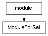

class cymel.core.cyobjects.cyobject.ModuleForSel¶

-
class
cymel.core.cyobjects.cyobject.ModuleForSel(name)¶ ベースクラス:
module現在のセレクションを反映させるプロパティを追加するモジュールクラス。
既存モジュール名を指定して置き換える。
Methods:
__init__(name)既存モジュール名を指定して置き換える。 selected([sel])セレクションから CyObjectリストを得る。selobj([i])現在選択されている i 番目の CyObjectを得る。Attributes:
-
sel¶ 現在選択されている最初の
CyObjectを得るプロパティ。selobjを引数無し(i=0)で呼び出すこととほぼ等しいが、 何も選択されていない状態だと None となり、エラーにはならない。戻り値の型: CyObjector None
Methods Details:
-
__init__(name)¶ 既存モジュール名を指定して置き換える。
-